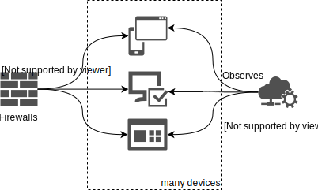
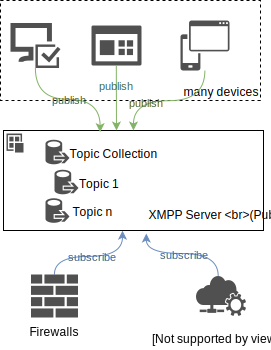
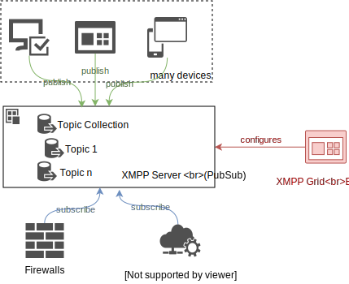
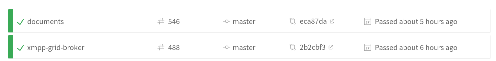
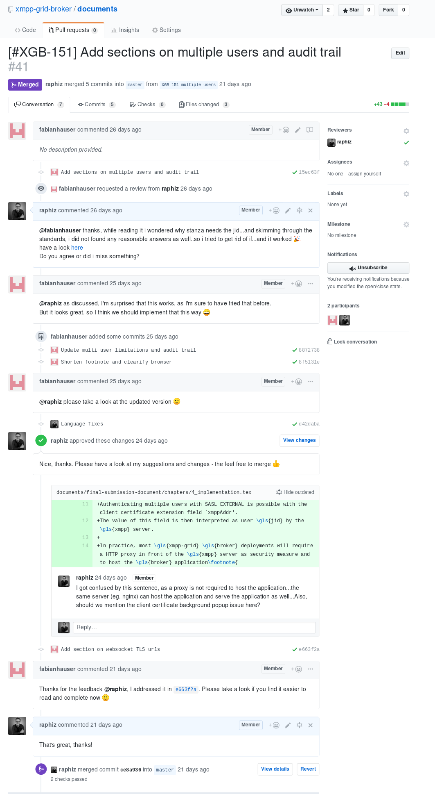

XMPP-Grid Broker
Final Presentation Draft
Raphael Zimmermann & Fabian Hauser🔭 Outline
- Problem Description
- Our Solution (Demo)
- Our Focus
- Conclusion
- Questions
🏋 1. The Problem
📚 IETF Draft
"Using XMPP for Security Information Exchange"

🎉 XMPP-Grid Broker
🗃 Task Description
- ✓ Understand the Standards (IETF, XEPs)
- ✓ Collect Requirements
- ✓ Architecture
- ✓ Technology Selection
- ✓ Implementation
📜 Understanding the Standards
🗃 Task Description
- ✓ Understand the Standards (IETF, XEPs)
- ✓ Collect Requirements
- ✓ Architecture
- ✓ Technology Selection
- ✓ Implementation
🏗 2. Our Solution

💻 Demo
🔬
3. Our Focus
🎯 Design Goals
- 🔒 Security
- 🖥️ Cross-Plattform
- ⏲️ Long-Term Maintainability
- 🐳 Reproducibility
👷 Software Engineering
📊 Testability
324 Test Cases♼ Continuous Integration
Also with documentation
🔍 Code Reviews
122 Pull-Requests on GitHub
🏗 Architectural Decisions

💭 4. Conclusion
🔧 Technical
- XMPP PubSub is still a draft
- SASL EXTERNAL + Browser = 💔
- Angular + TDD = 💔
🎓 Non-Technical Personal
- Interesting Project
- Working with many standards (drafts)
- Most requirements implemented*
* See final submission document for details